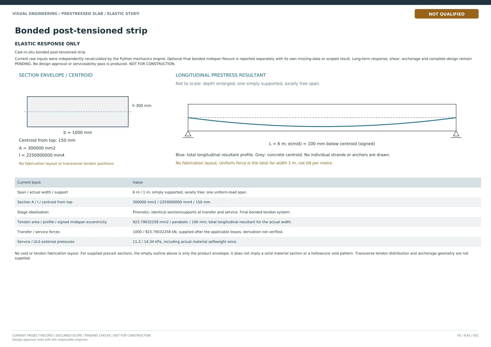

Final bonded flexure at midspan
A 6 m simply supported strip is 1 m wide and 300 mm deep. Its ultimate sagging moment is 64.530 kNm. Using a synthetic tendon curve and a single bonded layer, the design resistance is 266.690 kNm before adding ordinary reinforcement. Adding a 300 mm² layer of 500N bars 260 mm below the top increases resistance to 286.973 kNm.
The calculation book records the second arrangement, its neutral-axis equilibrium and the separate minimum nominal strength and ductility checks. The example uses training data. Overall slab approval, shear, anchorage and long-term response require engineering review.
Loading the report…
